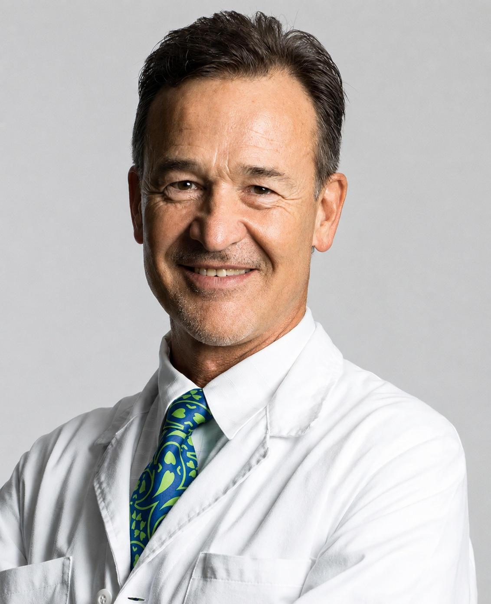
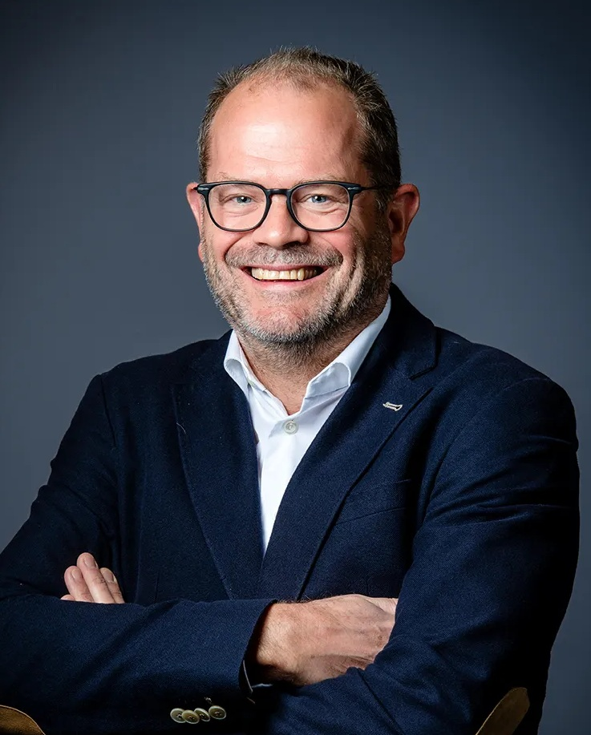

Заочная оценка
Изучаем ваши документы и организуем второе мнение профильного профессора.
Направление · Лечение
От точной диагностики до операции на сердце — у профессоров ведущих клиник Швейцарии, с сопровождением CorSwiss на каждом шаге.
О направлении
Кардиология — одно из направлений, где уровень врача решает всё. Мы знаем кардиологов и кардиохирургов ведущих швейцарских клиник лично и подбираем специалиста под ваш конкретный случай — а не «ближайшего свободного».
Начать можно дистанционно: мы организуем заочную оценку ваших документов и второе мнение профессора ещё до поездки. Дальше — программа с понятной сметой и сроками: диагностика, при необходимости вмешательство и кардиореабилитация.
Клиника-партнёр Privatklinik Bethanien — участник Mayo Clinic Care Network: доступ к опыту и протоколам клиники Мэйо в кардиологии.
С чем обращаются
Коронарография, стентирование, аортокоронарное шунтирование; реабилитация после инфаркта.
Реконструкция и протезирование клапанов, включая транскатетерные методики (TAVI).
Фибрилляция предсердий, тахикардии: радиочастотная аблация, кардиостимуляторы.
Подбор терапии, наблюдение и программы восстановления.
Поиск причины и настройка терапии при трудно контролируемом давлении.
Кальциевый индекс, эхокардиография, нагрузочные тесты — в рамках превентивного чекапа.
Процесс
Изучаем ваши документы и организуем второе мнение профильного профессора.
Подбираем клинику и врача, согласуем смету и сроки.
Диагностика и вмешательство. Переводчик и ассистент рядом на каждом приёме.
Кардиореабилитация и удалённый контроль результатов после возвращения домой.
Врачи направления

Здоровье сердца

Сосудистая медицина
Кардиохирургия и не только
Под ваш случай мы подбираем профессора по всей Швейцарии — не только из представленных на сайте.
Заказать консультациюВопросы и ответы
Цена зависит от диагноза, объёма процедур и клиники. Для ориентира: кардиологический чекап — от CHF 3'500, стентирование — от CHF 15'000, аортокоронарное шунтирование — от CHF 45'000. Точную смету от клиники вы получаете до начала лечения.
Да. Мы организуем заочную оценку ваших документов и второе мнение профильного профессора — ещё до планирования поездки.
Нет. Медицинский переводчик сопровождает вас на приёмах и остаётся на связи всё время пребывания в Швейцарии.
Обычно 5–10 рабочих дней — в зависимости от срочности и необходимости оформления визы.
Мы — ваш независимый представитель и медицинский консьерж полного цикла. Подбираем лучшего специалиста под ваш случай по всей Швейцарии, а не в одной клинике, организуем второе мнение и согласуем прозрачную смету до начала лечения. Дальше всё в одних руках: медицинская виза, перелёт и трансфер, проживание — в том числе для сопровождающих, личный медицинский переводчик на каждом приёме и ассистент 24/7 для любых бытовых вопросов. Ваш персональный медицинский менеджер ведёт случай от первого запроса до возвращения домой — а после остаётся на связи: удалённо контролируем результаты и координируем реабилитацию.
Швейцарская кардиология — это точная диагностика и высочайшие стандарты лечения сердца и сосудов:
CorSwiss организует диагностику и лечение в ведущих кардиологических центрах Швейцарии — от первого обращения до полного выздоровления и реабилитации.
Консультация
Конфиденциальная беседа с врачом-куратором: оценим документы, предложим профессора и рассчитаем стоимость.